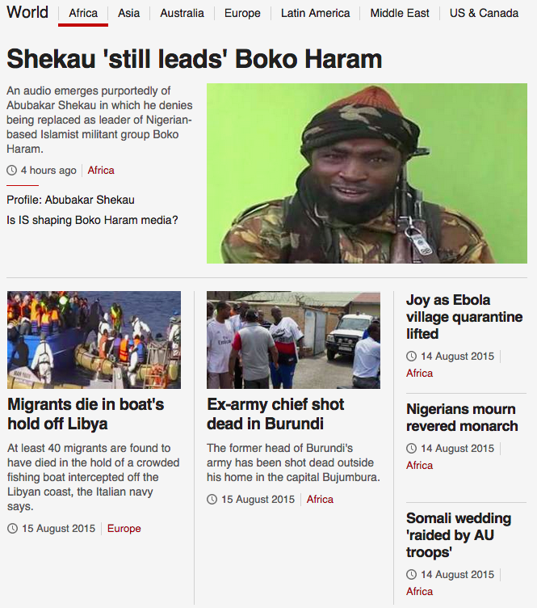
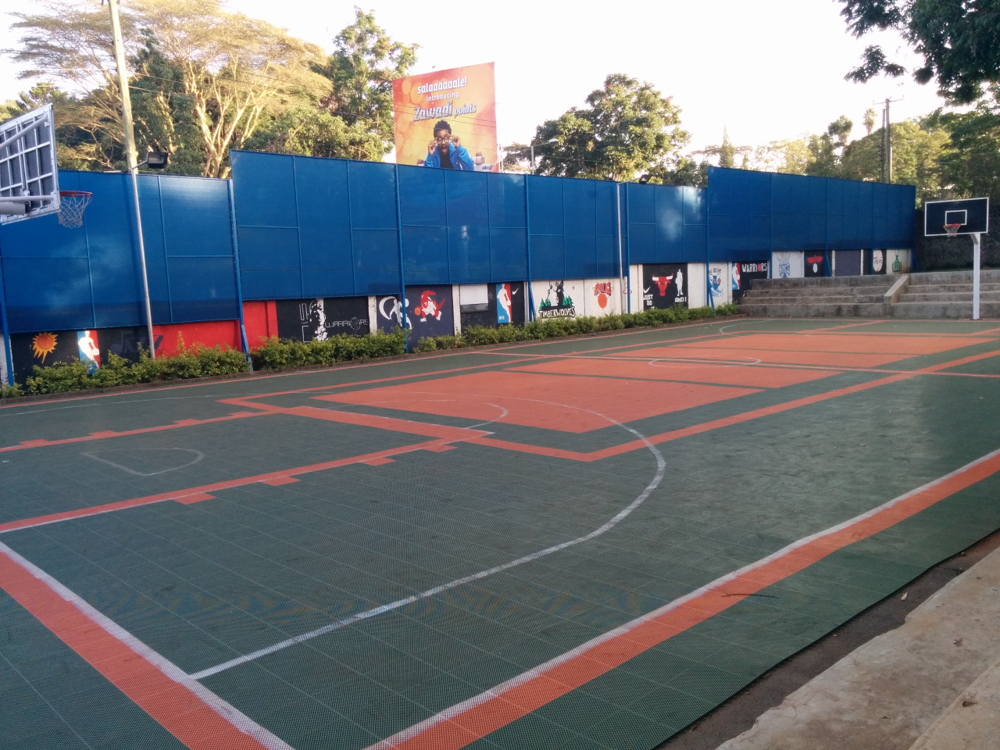
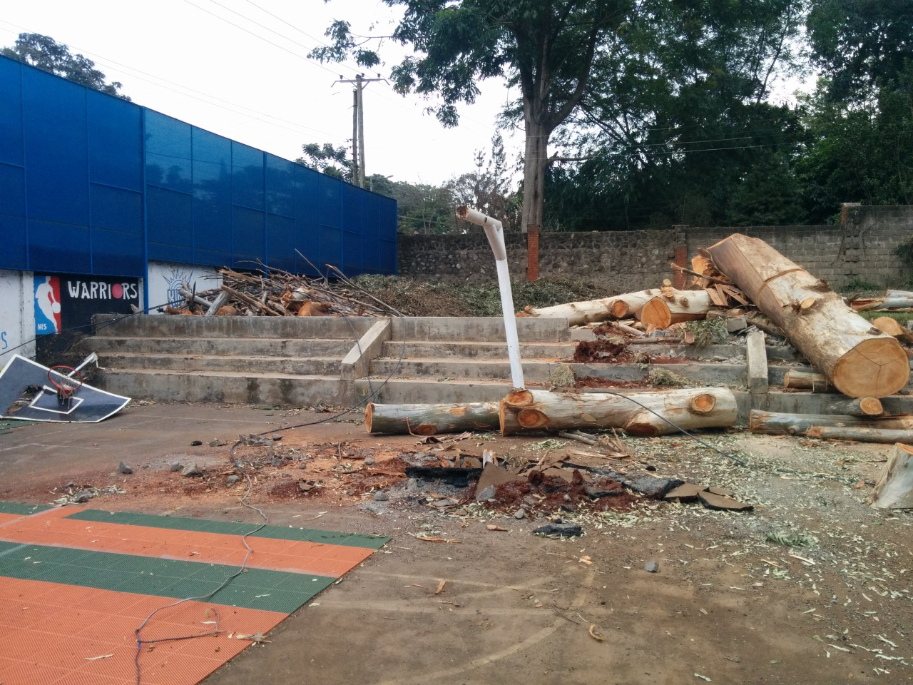
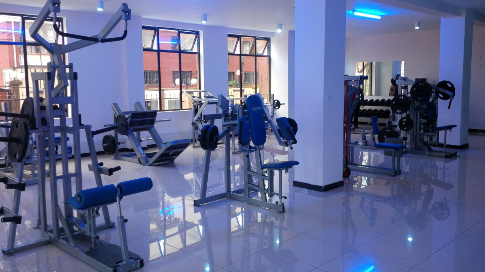
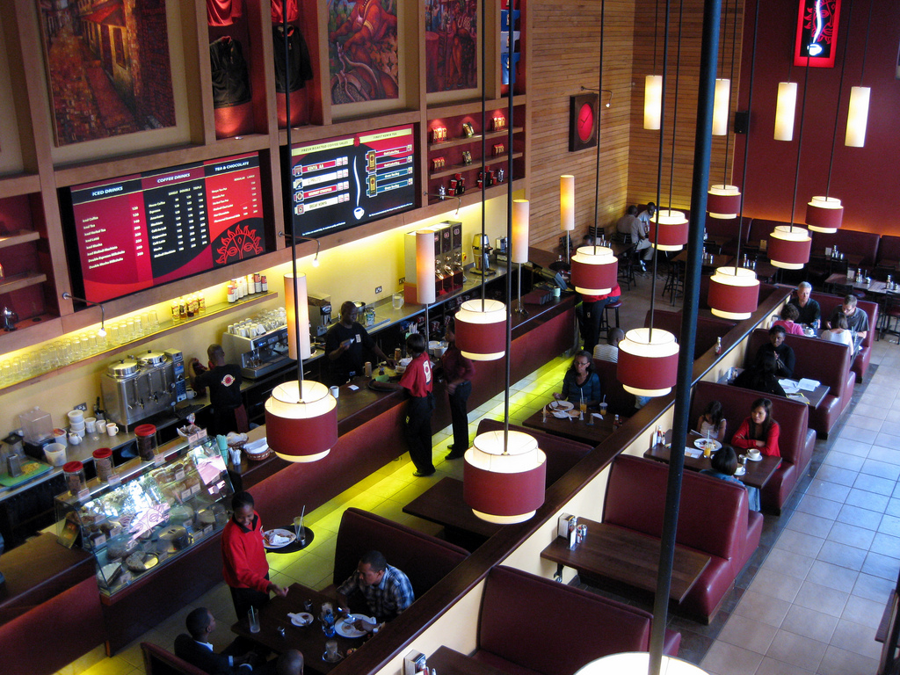
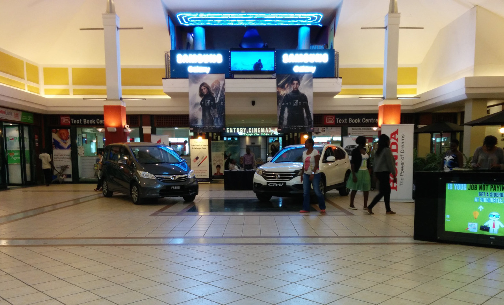

My life in Nairobi
POSTED 20 AUGUST 2015
President Obama made history last month by becoming the first sitting U.S. president to travel to Kenya. In the days leading up to his visit, CNN created controversy by labeling Kenya a "terror hotbed." The hashtag #SomeoneTellCNN quickly began trending worldwide, with many Kenyans calling out the news network for inaccurate and biased reporting. Tony Maddox, a CNN executive vice president and managing director, later flew to Kenya to apologize directly to President Uhuru Kenyatta, saying:
"It wasn't a deliberate attempt to portray Kenya negatively, it is regrettable and we shouldn't have done it. There is a world at war with extremists; we know what a hotbed of terror looks like, and Kenya isn't one."
This story is just the latest in an ongoing trend of media bias when it comes to reporting news from Africa. For example, take a look at the BBC's landing page for Africa from August 16, 2015:
The problem isn't that African stories of poverty, disease, corruption, and insecurity are being reported; it's that they are the only African stories being reported. Certainly they do exist, but painting the continent with a single brush leads to an insultingly simplistic understanding of the real story of Africa, a continent made up of 54 countries, over half of the world's 10 fastest growing economies, and an incredibly diverse population of 1.2 billion people speaking over a thousand languages.
The greater failure of CNN's recent blunder was that they missed an opportunity to use President Obama's visit to Kenya as a platform for educating their western audience on modern issues in Kenya and Africa as a whole. Several media projects have critiqued the West's portrayal of Africa, yet misconceptions persist. A major network like CNN could have made real progress on this front during Obama's visit — instead they relied on tired stereotypes.
I was talking about this issue recently with a friend who made an interesting point:
"Yes Zach, this is true. But you are guilty of the same bias. I've read your blog. Your only portrayals of Kenya are from the Kibera slum, a rural village, and an orphanage. You don't show the other side of life here."
She was right. I was complaining about simplistic media portrayals without examining how my own blog was contributing to the problem. Today I attempt to correct that mistake. Consider this part II of my earlier post: Kenya's urban/rural divide. Focusing on the urban side of Kenyan life, my goal is to normalize Nairobi by showing some of the places I visit on a regular basis. In other words, I want to show that Nairobi is just a normal city where people are living productive lives, not a dusty, ebola-laden village where terrorists roam freely.
Here's an outdoor basketball court where I play pickup games three days a week:
At least, it was until this happened (don't worry, this wasn't the result of a terrorist attack, just a fallen tree):
A gym near my apartment where I workout:
Java Cafe, one of many throughout Nairobi where I can enjoy a cappuccino and free WiFi:
Junction Mall, complete with a modern grocery store, dozens of specialty shops, and a stadium-seating movie theater showing the latest Hollywood releases:
Nairobi is a city of over three million people at the center of East Africa's largest economy. As Kenya's capitol it boasts a growing middle class and is home to a vibrant tech scene nicknamed the "silicon savannah." Many of the modern innovations that define 21st century living are available here. In fact, the internet connection in my apartment is faster than what I had at home in the states. From my smartphone I can call a taxi using Uber, meet new people on Tinder, order takeout on HelloFood, and pay almost anyone/anywhere with M-PESA, one of the most advanced mobile payment systems in the world.
This story is not unique to Nairobi. Africa is a continent on the move. Rapid development is making established narratives obsolete. So next time you hear news out of Africa, stop and think. There's likely more to the story.